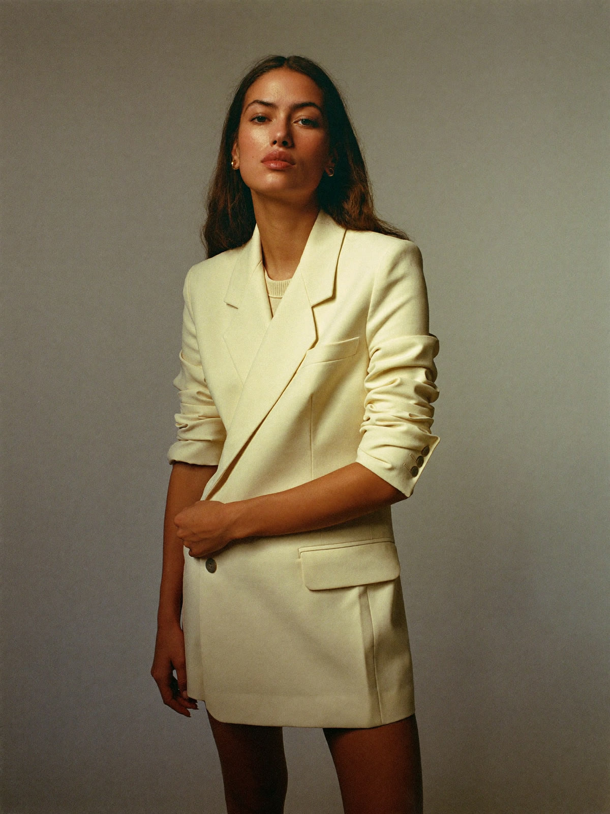
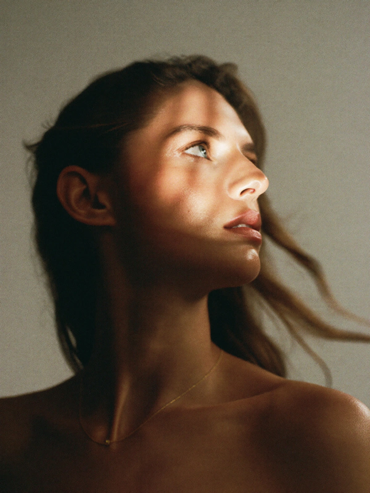
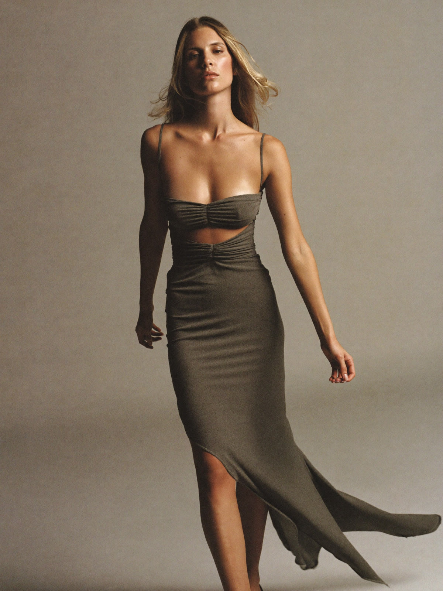
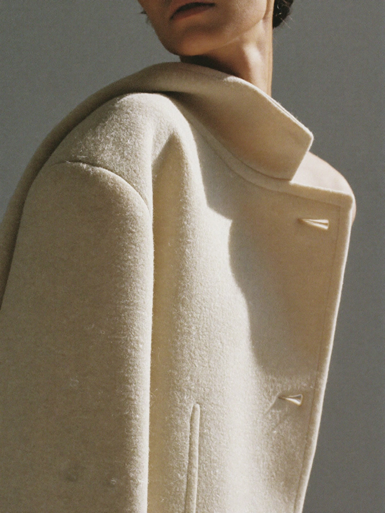
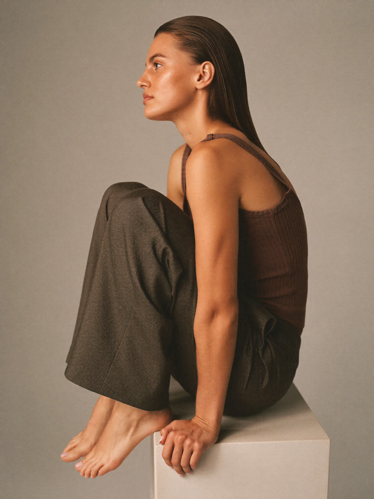
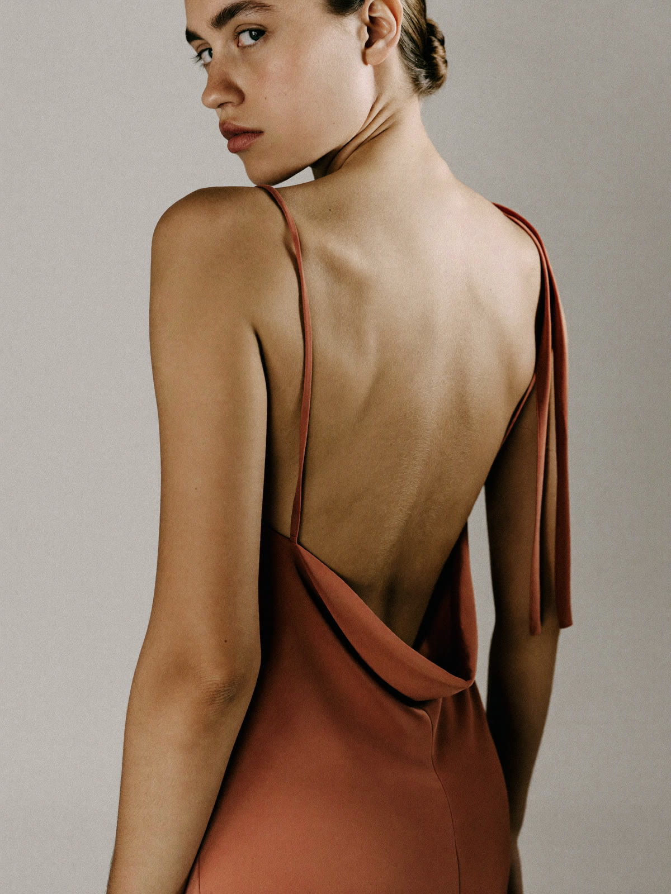
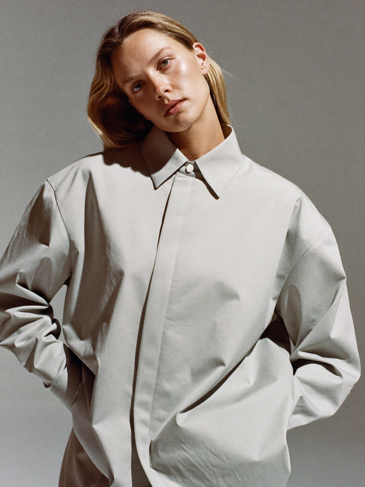
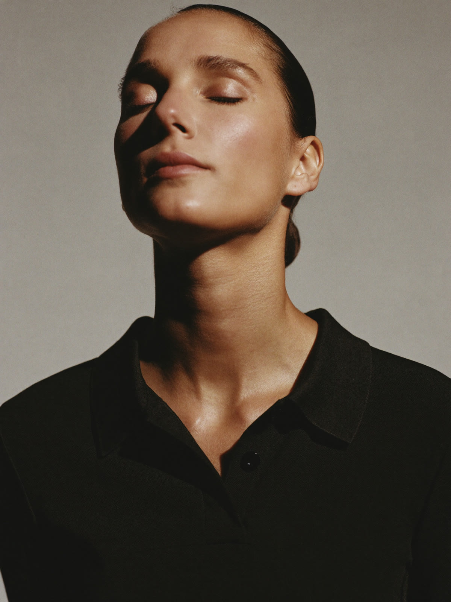
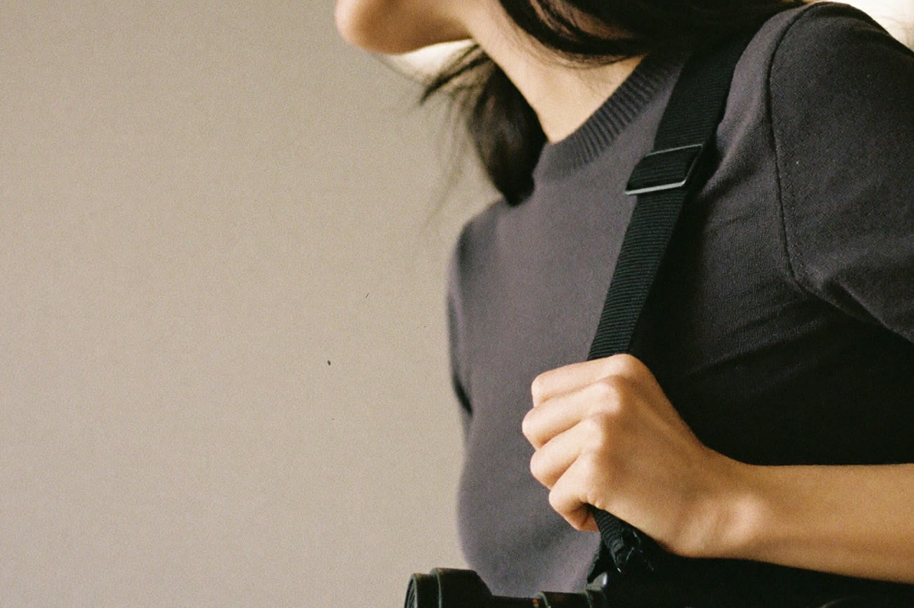

Portfolio
A few frames from recent shoots.








About
Who is behind the camera.

I am Yarden Eshel. I shoot fashion in Israel, for brands and for the people who design them.
I run a quiet set. You can bring whoever you need with you. We stop when anyone asks to stop, and we still finish the list, because a calm room is faster than a tense one.
I am early in this career and I work like it matters, because it does.
What you get
What comes back after the shoot.
A campaign, a lookbook, or one good afternoon. The list is agreed first, and it comes back complete.
- Every frame in the sizes you actually need: upright, square, wide, and a clean cut for print.
- Colour matched across the whole set, so nothing looks like it came from a different day.
- Delivered to a date agreed in writing, before the shoot.
Contact